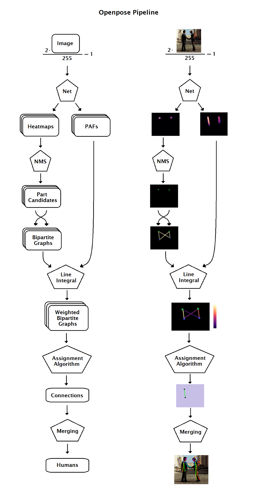

Human pose estimation using OpenPose
Table of Contents
1 Porting from Caffe to Tensorflow
- The OpenPose library is built upon a neural network and has been developed by Carnegie Mellon University with astounding help of COCO and MPII datasets
Github repo
git clone https://github.com/CMU-Perceptual-Computing-Lab/openpose.git
- OpenPose gathers three sets of trained models: one for body pose estimation, another one for hands and a last one for faces. And each set has several models depending on the dataset they have been trained on (COCO or MPII)
- So let’s begin with the body pose estimation model trained on MPII. We need two files: one that describes the architecture of the model (.prototxt) and one that stores the variables values of the model (.caffemodel)
To convert these files to tensorflow use the following repo:
git clone https://github.com/ethereon/caffe-tensorflow
The key script here is convert.py, which takes those two files as arguments along with paths for the new couple of files.
convert.py pose_deploy_linevec_faster_4_stages.prototxt \ --caffemodel pose_iter_160000.caffemodel --data_output_path data/output/path.npy \ --code_output_path code/output/path.py
This will return a Python class that describes the architecture (graph) of the model and an .npy file storing the values of the TensorFlow variables. To convert npy file to .ckpt file use
git clone https://github.com/alesolano/npy2ckpt
Finally, here's the openpose code in Tensorflow
import tensorflow as tf import cv2 ### GRAPH ### tf.reset_default_graph() saver = tf.train.import_meta_graph('/tmp/openpose_model.ckpt.meta') inputs = tf.get_default_graph().get_tensor_by_name('Placeholder:0') body = tf.get_default_graph().get_tensor_by_name('concat_stage7:0') print('The input placeholder is expecting an array of shape {} and type {}'.format(inputs.shape, inputs.dtype)) ### IMAGE ### img = cv2.imread('chuck-norris-kick.jpg') img = cv2.cvtColor(img, cv2.COLOR_BGR2RGB) res_img = cv2.resize(img, (656, 368)) prep_img = res_img.reshape([1, 368, 656, 3]) ### SESSION ### with tf.Session() as sess: saver.restore(sess, '/tmp/openpose_model.ckpt') output_img = sess.run(body, feed_dict={ inputs: prep_img }) print(output_img.shape)
- And the result is an image with 57 layers of depth. Mmmm… This is not exactly what I want. Why 57 layers?
- 18 layers for body parts location
- 1 layer for the background
- 19 layers for limbs information in the x direction
- 19 layers for limbs information in the y direction
- Is there a way to combine joints and limbs? Of course. OpenPose is not just a set of trained neural networks, it’s an entire library. And one of the functions inside this library is bodyPartConnectorCaffe.cpp
I’m just researching this right now, and it seems that the developers of OpenPose have made the work as easiest as possible. The Caffe code is perfectly isolated and there are only a few C++ files that depend on Caffe. These files are:
core/maximumCaffe.cpp core/nmsCaffe.cpp core/netCaffe.cpp core/resizeAndMergeCaffe.cpp pose/poseExtractorCaffe.cpp pose/bodyPartConnectorCaffe.cpp
2 Working of OpenPose
 Each part of the pipeline will be explained in the following sections
2.1 Parts and Pairs
- A body part is an element of the body, like neck, left shoulder or right hip.
A pair is a couple of parts. A connection between parts. We could say limb, but the connection between the nose and the left eye is definitely not a limb. Also, we are going to deal with connections between ears and shoulders that do not exist in real life.

2.2 Tensorflow Implementation
2.2.1 Preprocessing
- First but not least, we convert the image from [0,
255] to [-1, 1].
img = img * (2.0 / 255.0) — 1.0
2.2.2 Neural network
Here we do the main processing. The last operation of the neural network returns a tensor consisting of 57 matrices. However, this last op is just a concatenation of two different tensors: heatmaps and PAF's. The understanding of these two tensors is essential.

A heatmap is a matrix that stores the confidence the network has that a certain pixel contains a certain part. There are 18 (+1) heatmaps associated with each one of the parts and indexed as we showed in the drawing of the skeletons. We will extract the location of the body parts out of these 18 matrices.

PAFs (Part Affinity Fields) are matrices that give information about the position and orientation of pairs. They come in couples: for each part we have a PAF in the ‘x’ direction and a PAF in the ‘y’ direction. There are 38 PAFs associated with each one of the pairs and indexed as we showed in the drawing of the skeletons. We will associate couples of parts into pairs thanks to these 38 matrices.
Code implementation:
import tensorflow as tf # get tensors inputs = tf.get_default_graph().get_tensor_by_name('inputs:0') heatmaps_tensor = tf.get_default_graph().get_tensor_by_name('Mconv7_stage6_L2/BiasAdd:0') pafs_tensor = tf.get_default_graph().get_tensor_by_name('Mconv7_stage6_L1/BiasAdd:0') # forward pass with tf.Session() as sess: heatmaps, pafs = sess.run([heatmaps_tensor, pafs_tensor], feed_dict={ inputs: image })
2.2.3 Non Maximum Suppression
Next step is detecting the parts in the image.
We need to extract parts locations out of a heatmap. Or, in other words, we need to extract points out of a function. What are these points? The local maximums.

We apply a non-maximum suppression (NMS) algorithm to get those peaks.
- Start in the first pixel of the heatmap.
- Surround the pixel with a window of side 5 and find the maximum value in that area.
- Substitute the value of the center pixel for that maximum
- Slide the window one pixel and repeat these steps after we’ve covered the entire heatmap.
- Compare the result with the original heatmap. Those pixels staying with same value are the peaks we are looking for. Suppress the other pixels setting them with a value of 0
After all the process, the non-zero pixels denote the location of the part candidates.
- Source code
from scipy.ndimage.filters import maximum filter part_candidates = heatmap*(heatmap == maximum_filter(heatmap, footprint=np.ones((window_size, window_size))))
2.2.4 Bipartite graph
Now that we have found the candidates for each one of the body parts, we need to connect them to form pairs. And this is where graph theory steps into.
Say that, for a given image, we have located a set of neck candidates and a set of right hip candidates. For each neck there is a possible association, or connection candidate, with each one of the right hips. So, what we have, is a complete bipartite graph, where the vertices are the part candidates, and the edges are the connection candidates.

How can we find the right connections? Finding the best matching between vertices of a bipartite graph is a well-known problem in graph theory known as the assignment problem. In order to solve it, each edge on the graph should have a weight.
2.2.5 Line Integral
- The right connections can be found out by using line integral over PAF's
Line Integral measures the effect of a given field (in our case, the Part Affinity Fields) along a given curve (in our case, the possible connections between part candidates). (Ref: Khan Academy)

- The line integral will give each connection a score, that will be saved in a weighted bipartite graph and will allow us to solve the assignment problem
Note: in the code, we approximate the line integral by taking samples of the dot product and sum them all.
import math import numpy as np # building the vectors dx, dy = x2 — x1, y2 — y1 normVec = math.sqrt(dx ** 2 + dy ** 2) vx, vy = dx/normVec, dy/normVec # sampling num_samples = 10 xs = np.arange(x1, x2, dx/num_samples).astype(np.int8) ys = np.arange(y1, y2, dy/num_samples).astype(np.int8) # evaluating on the field pafXs = pafX[ys, xs] pafYs = pafY[ys, xs] # integral score = sum(pafXs * vx + pafYs * vy) / num_samples
2.2.6 Assignment
- Now, the weighted bipartite graph shows all connections between candidates of two parts and holds score for every connection.
- The next step is to find the connection that has maximum total
score. Steps given below:
- Sort each possible connection by its score.
- The connection with the highest score is indeed a final connection.
- Move to next possible connection. If no parts of this connection have been assigned to a final connection before, this is a final connection.
- Repeat the step 3 until we are done.
- As you see, there may be part candidates that will finally not fit into a pair.
Source Code
connection = [] used_idx1, used_idx2 = [], [] # sort possible connections by score, from maximum to minimum for conn_candidate in sorted(connection_temp, key=lambda x: x['score'], reverse=True): # check not connected if conn_candidate['idx'][0] in used_idx1 or conn_candidate['idx'][1] in used_idx2: continue connection.append(conn_candidate) used_idx1.append(conn_candidate['idx'][0]) used_idx2.append(conn_candidate['idx'][1])
2.2.7 Merging
- final step is to transform these detected connections into the final skeletons
- We will start with a naive assumption: at first, every connection belongs to a different human. This way, we have the same number of humans as connections we have detected
Let Humans be a collection of sets
{H1, H2, ..., Hk}. Each one of these sets — that is, each human — contains, at first, two parts (a pair). And let’s describe a part as a tuple of an index, a coordinate in the‘x’direction and a coordinate in the‘y’direction.if humans H1 and H2 share a part index with the same coordinates, they are sharing the same part! H1 and H2 are, therefore, the same humans. So we merge both sets into H1 and remove H2.
- We continue to do this for every couple of humans until no couple share a part.
Note: in the code, for some sensible reasons, we first define a human as a set of connections, not as set of parts. After all the merging is done, we finally describe a human as a set of parts.
from collections import defaultdict import itertools no_merge_cache = defaultdict(list) empty_set = set() while True: is_merged = False for h1, h2 in itertools.combinations(connections_by_human.keys(), 2): for c1, c2 in itertools.product(connections_by_human[h1], connections_by_human[h2]): # if two humans share a part (same part idx and coordinates), merge those humans if set(c1['partCoordsAndIdx']) & set(c2['partCoordsAndIdx']) != empty_set: is_merged = True # extend human1 connections with human2 connections connections_by_human[h1].extend(connections_by_human[h2]) connections_by_human.pop(h2) # delete human2 break if not is_merged: # if no more mergings are possible, then break break # describe humans as a set of parts, not as a set of connections humans = [human_conns_to_human_parts(human_conns) for human_conns in connections_by_human.values()]
2.2.8 Output
Finally what you get is a collection of human sets, where each human is a set of parts, where each part contains its index, its relative coordinates and its score.
2.3 Github Repository
2.3.1 Installation
- Dependencies
- Python 3
- TensorFlow
- OpenCV
- Numpy
- Scipy
- Matplotlib installed.
- Build the code
git clone https://gist.github.com/alesolano/b073d8ec9603246f766f9f15d002f4f4 openpose_pipeline cd openpose_pipeline mkdir models cd models wget https://www.dropbox.com/s/2dw1oz9l9hi9avg/optimized_openpose.pb cd .. python inference.py --imgpath /path/to/your/img
- Main files from the repo
- inference.py
''' All code is highly based on Ildoo Kim's code (https://github.com/ildoonet/tf-openpose) and derived from the OpenPose Library (https://github.com/CMU-Perceptual-Computing-Lab/openpose/blob/master/LICENSE) ''' import tensorflow as tf import cv2 import numpy as np import argparse from common import estimate_pose, draw_humans, read_imgfile import time if __name__ == '__main__': parser = argparse.ArgumentParser(description='Tensorflow Openpose Inference') parser.add_argument('--imgpath', type=str, default='./images/wywh.jpg') parser.add_argument('--input-width', type=int, default=656) parser.add_argument('--input-height', type=int, default=368) args = parser.parse_args() t0 = time.time() tf.reset_default_graph() from tensorflow.core.framework import graph_pb2 graph_def = graph_pb2.GraphDef() # Download model from https://www.dropbox.com/s/2dw1oz9l9hi9avg/optimized_openpose.pb with open('models/optimized_openpose.pb', 'rb') as f: graph_def.ParseFromString(f.read()) tf.import_graph_def(graph_def, name='') t1 = time.time() print(t1 - t0) inputs = tf.get_default_graph().get_tensor_by_name('inputs:0') heatmaps_tensor = tf.get_default_graph().get_tensor_by_name('Mconv7_stage6_L2/BiasAdd:0') pafs_tensor = tf.get_default_graph().get_tensor_by_name('Mconv7_stage6_L1/BiasAdd:0') t2 = time.time() print(t2 - t1) image = read_imgfile(args.imgpath, args.input_width, args.input_height) t3 = time.time() print(t3 - t2) with tf.Session() as sess: heatMat, pafMat = sess.run([heatmaps_tensor, pafs_tensor], feed_dict={ inputs: image }) t4 = time.time() print(t4 - t3) heatMat, pafMat = heatMat[0], pafMat[0] humans = estimate_pose(heatMat, pafMat) # display image = cv2.imread(args.imgpath) image_h, image_w = image.shape[:2] image = draw_humans(image, humans) scale = 480.0 / image_h newh, neww = 480, int(scale * image_w + 0.5) image = cv2.resize(image, (neww, newh), interpolation=cv2.INTER_AREA) cv2.imshow('result', image) t5 = time.time() print(t5 - t4) cv2.waitKey(0)
- common.py
''' All code is highly based on Ildoo Kim's code (https://github.com/ildoonet/tf-openpose) and derived from the OpenPose Library (https://github.com/CMU-Perceptual-Computing-Lab/openpose/blob/master/LICENSE) ''' from collections import defaultdict from enum import Enum import math import numpy as np import itertools import cv2 from scipy.ndimage.filters import maximum_filter class CocoPart(Enum): Nose = 0 Neck = 1 RShoulder = 2 RElbow = 3 RWrist = 4 LShoulder = 5 LElbow = 6 LWrist = 7 RHip = 8 RKnee = 9 RAnkle = 10 LHip = 11 LKnee = 12 LAnkle = 13 REye = 14 LEye = 15 REar = 16 LEar = 17 Background = 18 CocoPairs = [ (1, 2), (1, 5), (2, 3), (3, 4), (5, 6), (6, 7), (1, 8), (8, 9), (9, 10), (1, 11), (11, 12), (12, 13), (1, 0), (0, 14), (14, 16), (0, 15), (15, 17), (2, 16), (5, 17) ] # = 19 CocoPairsRender = CocoPairs[:-2] CocoPairsNetwork = [ (12, 13), (20, 21), (14, 15), (16, 17), (22, 23), (24, 25), (0, 1), (2, 3), (4, 5), (6, 7), (8, 9), (10, 11), (28, 29), (30, 31), (34, 35), (32, 33), (36, 37), (18, 19), (26, 27) ] # = 19 CocoColors = [[255, 0, 0], [255, 85, 0], [255, 170, 0], [255, 255, 0], [170, 255, 0], [85, 255, 0], [0, 255, 0], [0, 255, 85], [0, 255, 170], [0, 255, 255], [0, 170, 255], [0, 85, 255], [0, 0, 255], [85, 0, 255], [170, 0, 255], [255, 0, 255], [255, 0, 170], [255, 0, 85]] NMS_Threshold = 0.1 InterMinAbove_Threshold = 6 Inter_Threashold = 0.1 Min_Subset_Cnt = 4 Min_Subset_Score = 0.8 Max_Human = 96 def human_conns_to_human_parts(human_conns, heatMat): human_parts = defaultdict(lambda: None) for conn in human_conns: human_parts[conn['partIdx'][0]] = ( conn['partIdx'][0], # part index (conn['coord_p1'][0] / heatMat.shape[2], conn['coord_p1'][1] / heatMat.shape[1]), # relative coordinates heatMat[conn['partIdx'][0], conn['coord_p1'][1], conn['coord_p1'][0]] # score ) human_parts[conn['partIdx'][1]] = ( conn['partIdx'][1], (conn['coord_p2'][0] / heatMat.shape[2], conn['coord_p2'][1] / heatMat.shape[1]), heatMat[conn['partIdx'][1], conn['coord_p2'][1], conn['coord_p2'][0]] ) return human_parts def non_max_suppression(heatmap, window_size=3, threshold=NMS_Threshold): heatmap[heatmap < threshold] = 0 # set low values to 0 part_candidates = heatmap*(heatmap == maximum_filter(heatmap, footprint=np.ones((window_size, window_size)))) return part_candidates def estimate_pose(heatMat, pafMat): if heatMat.shape[2] == 19: # transform from [height, width, n_parts] to [n_parts, height, width] heatMat = np.rollaxis(heatMat, 2, 0) if pafMat.shape[2] == 38: # transform from [height, width, 2*n_pairs] to [2*n_pairs, height, width] pafMat = np.rollaxis(pafMat, 2, 0) # reliability issue. heatMat = heatMat - heatMat.min(axis=1).min(axis=1).reshape(19, 1, 1) heatMat = heatMat - heatMat.min(axis=2).reshape(19, heatMat.shape[1], 1) _NMS_Threshold = max(np.average(heatMat) * 4.0, NMS_Threshold) _NMS_Threshold = min(_NMS_Threshold, 0.3) coords = [] # for each part index, it stores coordinates of candidates for heatmap in heatMat[:-1]: # remove background part_candidates = non_max_suppression(heatmap, 5, _NMS_Threshold) coords.append(np.where(part_candidates >= _NMS_Threshold)) connection_all = [] # all connections detected. no information about what humans they belong to for (idx1, idx2), (paf_x_idx, paf_y_idx) in zip(CocoPairs, CocoPairsNetwork): connection = estimate_pose_pair(coords, idx1, idx2, pafMat[paf_x_idx], pafMat[paf_y_idx]) connection_all.extend(connection) conns_by_human = dict() for idx, c in enumerate(connection_all): conns_by_human['human_%d' % idx] = [c] # at first, all connections belong to different humans no_merge_cache = defaultdict(list) empty_set = set() while True: is_merged = False for h1, h2 in itertools.combinations(conns_by_human.keys(), 2): if h1 == h2: continue if h2 in no_merge_cache[h1]: continue for c1, c2 in itertools.product(conns_by_human[h1], conns_by_human[h2]): # if two humans share a part (same part idx and coordinates), merge those humans if set(c1['uPartIdx']) & set(c2['uPartIdx']) != empty_set: is_merged = True # extend human1 connectios with human2 connections conns_by_human[h1].extend(conns_by_human[h2]) conns_by_human.pop(h2) # delete human2 break if is_merged: no_merge_cache.pop(h1, None) break else: no_merge_cache[h1].append(h2) if not is_merged: # if no more mergings are possible, then break break # reject by subset count conns_by_human = {h: conns for (h, conns) in conns_by_human.items() if len(conns) >= Min_Subset_Cnt} # reject by subset max score conns_by_human = {h: conns for (h, conns) in conns_by_human.items() if max([conn['score'] for conn in conns]) >= Min_Subset_Score} # list of humans humans = [human_conns_to_human_parts(human_conns, heatMat) for human_conns in conns_by_human.values()] return humans def estimate_pose_pair(coords, partIdx1, partIdx2, pafMatX, pafMatY): connection_temp = [] # all possible connections peak_coord1, peak_coord2 = coords[partIdx1], coords[partIdx2] for idx1, (y1, x1) in enumerate(zip(peak_coord1[0], peak_coord1[1])): for idx2, (y2, x2) in enumerate(zip(peak_coord2[0], peak_coord2[1])): score, count = get_score(x1, y1, x2, y2, pafMatX, pafMatY) if (partIdx1, partIdx2) in [(2, 3), (3, 4), (5, 6), (6, 7)]: # arms if count < InterMinAbove_Threshold // 2 or score <= 0.0: continue elif count < InterMinAbove_Threshold or score <= 0.0: continue connection_temp.append({ 'score': score, 'coord_p1': (x1, y1), 'coord_p2': (x2, y2), 'idx': (idx1, idx2), # connection candidate identifier 'partIdx': (partIdx1, partIdx2), 'uPartIdx': ('{}-{}-{}'.format(x1, y1, partIdx1), '{}-{}-{}'.format(x2, y2, partIdx2)) }) connection = [] used_idx1, used_idx2 = [], [] # sort possible connections by score, from maximum to minimum for conn_candidate in sorted(connection_temp, key=lambda x: x['score'], reverse=True): # check not connected if conn_candidate['idx'][0] in used_idx1 or conn_candidate['idx'][1] in used_idx2: continue connection.append(conn_candidate) used_idx1.append(conn_candidate['idx'][0]) used_idx2.append(conn_candidate['idx'][1]) return connection def get_score(x1, y1, x2, y2, pafMatX, pafMatY): num_inter = 10 dx, dy = x2 - x1, y2 - y1 normVec = math.sqrt(dx ** 2 + dy ** 2) if normVec < 1e-4: return 0.0, 0 vx, vy = dx / normVec, dy / normVec xs = np.arange(x1, x2, dx / num_inter) if x1 != x2 else np.full((num_inter, ), x1) ys = np.arange(y1, y2, dy / num_inter) if y1 != y2 else np.full((num_inter, ), y1) xs = (xs + 0.5).astype(np.int8) ys = (ys + 0.5).astype(np.int8) # without vectorization pafXs = np.zeros(num_inter) pafYs = np.zeros(num_inter) for idx, (mx, my) in enumerate(zip(xs, ys)): pafXs[idx] = pafMatX[my][mx] pafYs[idx] = pafMatY[my][mx] # vectorization slow? # pafXs = pafMatX[ys, xs] # pafYs = pafMatY[ys, xs] local_scores = pafXs * vx + pafYs * vy thidxs = local_scores > Inter_Threashold return sum(local_scores * thidxs), sum(thidxs) def read_imgfile(path, width, height): img = cv2.imread(path) val_img = preprocess(img, width, height) return val_img def preprocess(img, width, height): val_img = cv2.cvtColor(img, cv2.COLOR_BGR2RGB) # cv2 reads in BGR format val_img = cv2.resize(val_img, (width, height)) # each net accept only a certain size val_img = val_img.reshape([1, height, width, 3]) val_img = val_img.astype(float) val_img = val_img * (2.0 / 255.0) - 1.0 # image range from -1 to +1 return val_img def draw_humans(img, human_list): img_copied = np.copy(img) image_h, image_w = img_copied.shape[:2] centers = {} for human in human_list: part_idxs = human.keys() # draw point for i in range(CocoPart.Background.value): if i not in part_idxs: continue part_coord = human[i][1] center = (int(part_coord[0] * image_w + 0.5), int(part_coord[1] * image_h + 0.5)) centers[i] = center cv2.circle(img_copied, center, 3, CocoColors[i], thickness=3, lineType=8, shift=0) # draw line for pair_order, pair in enumerate(CocoPairsRender): if pair[0] not in part_idxs or pair[1] not in part_idxs: continue img_copied = cv2.line(img_copied, centers[pair[0]], centers[pair[1]], CocoColors[pair_order], 3) return img_copied
- inference.py